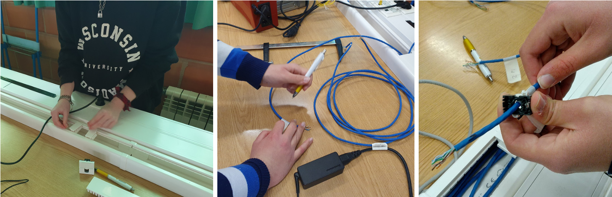
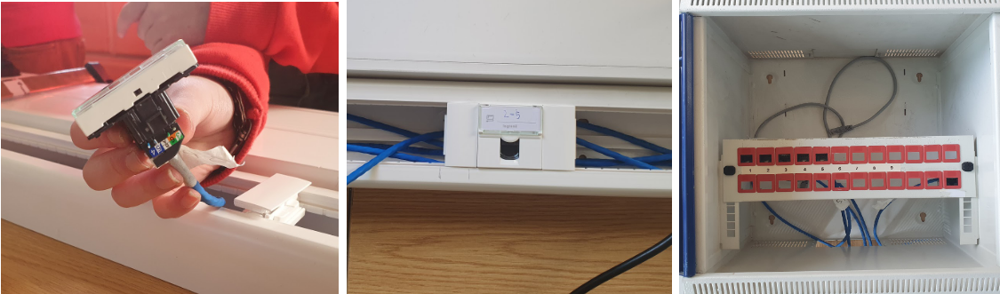
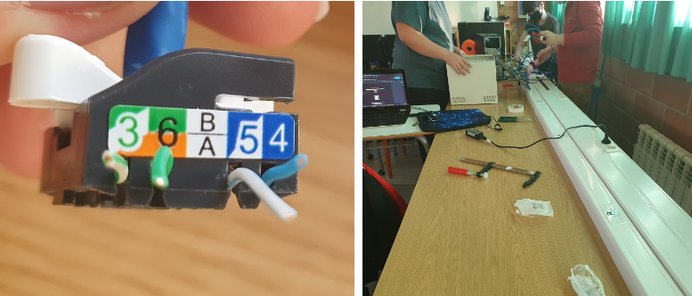
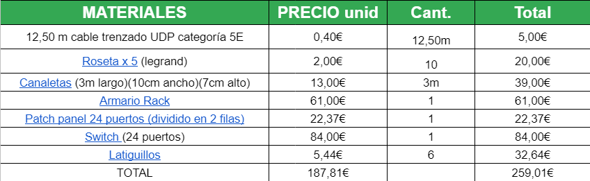
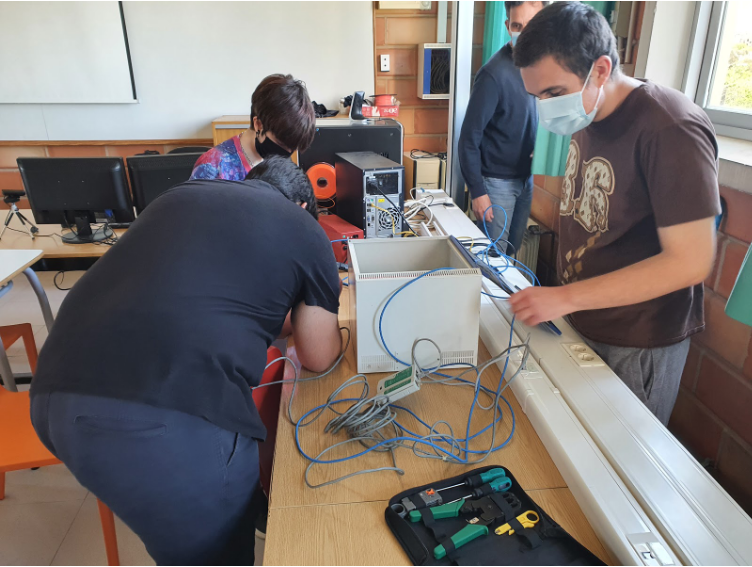
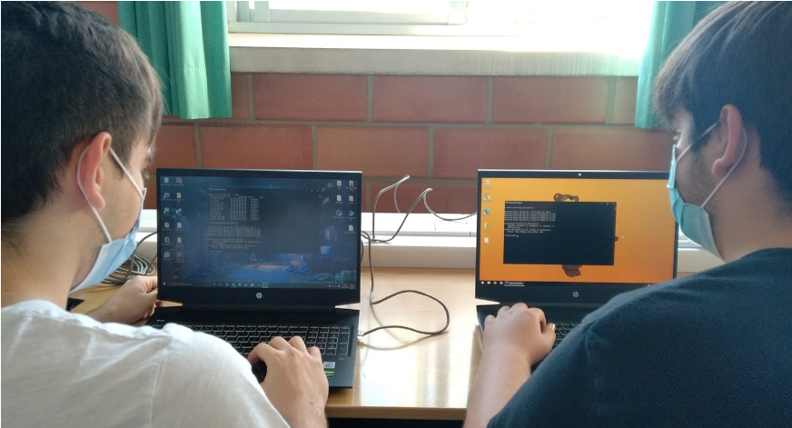
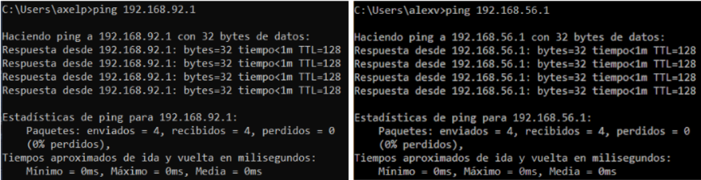
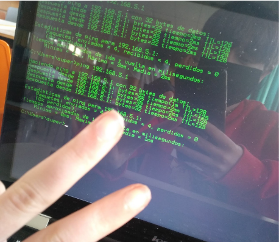
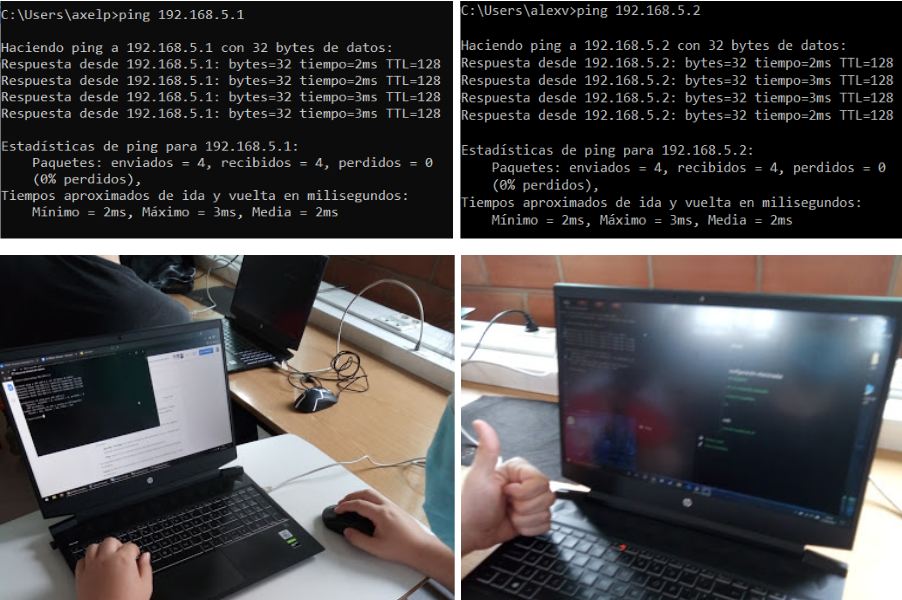
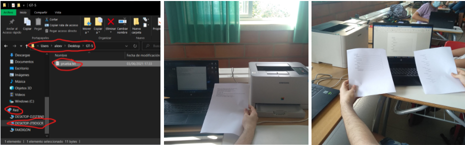

Sant Josep Obrer
Formación Profesional de informatica
1º SMIX
XALO
Creación de una red local
Portavoz: Alex Pizarro
Secretario: Alejandro Cano
Coordinador: Alejandro Suárez
Coordinadora: Rosario Pozo
Index
1-Objetivo.................................................
2-Presupuesto..........................................
3-Simulación.............................................
4-Diari de muntatge..................................
Objetivo
El objetivo de este proyecto es instalar y configurar una red local documentando el proceso y obstáculos que nos hemos encontrado durante la instalación/configuración. También ha de incluir el proceso un esquema con el presupuesto de los materiales usados. Y por último también mostraremos una recreación(imagen) del proyecto en una simulación usando Packet tracer.
Lista de presupuesto
| Material | Precio.Unid | Cantidad | Total |
|---|---|---|---|
| 12,50 m cable trenzado UDP categoría 5E | 0,40€ | 12,50m | 5,00€ |
| Roseta x 5 (legrand) | 2,00€ | 5 | 10,00€ |
| Canaletas (3m largo)(10cm ancho)(7cm alto) | 13,00€ | 3m | 39,00€ |
| Armario Rack | 61,00€ | 1 | 61,00€ |
| Patch panel 24 puertos (dividido en 2 filas) | 10,86€ | 1 | 10,86€ |
| Switch (24 puertos) | 84,00€ | 1 | 84,00€ |
| TOTAL | 171,26€ | x | 209,86€ |
| Material | Precio.Unid | Cantidad | Total |
|---|---|---|---|
| Sargento x 3 | 8,00€ | 3 | 24,00€ |
| Kit de herramientas (Marca BOBOH) | 22,00€ | 1 | 21,99€ |
| TOTAL | 30,00€ | x | 45,99€ |
| Trabajadores | Horas | Total |
|---|---|---|
| Alejandro Cano | 4 | 80€ |
| Rosario Pozo | 3 | 60€ |
| Alejandro Suarez | 3 | 60€ |
| Alex Pizarro | 4 | 80€ |
TOTAL = 358,63€ | 21% de IVA incluido
Simulación red local
En este apartado mostraremos unas capturas de una sencilla recreación de TODA la red de la clase. Hemos remplazado las rosetas por ordenadores ya que no se encuenrtra en paket tracer, les hemos puesto una IP a cada uno. Cada recuadro del simulador representa una subred, las subredes vienen de la siquiente red : 192.168.x.x. En el caso de la que se encuentra arriba a la derecha (la nuestra) es la subred 192.168.5.x. No podemos poner pruebas de carpetas compartidas (en este simulador no se puede)
Diario de montaje
En este apartado os mostraremos nuestro progreso a lo largo de los dias en los que le hemos dedicado tiempo a la web junto a unas imagenes. Han habido casos en los que no hemos hecho fotos de algunos dias porque haciamos lo mismo que el anterior o porque no no salia no era largo de hacer o teniamos que repetirlo.
04/05/2021
Hemos comenzado el proyecto con una explicación del trabajo y colocado las canaletas, hemos pasado el cable UTP he identificado los extremos y hemos preparado los sitios donde irán las rosetas (una cada 50 cm).
05/05/2021
Hoy hemos crimpar los extremos de cable hacia el conector hembra en los cinco cables que preparamos en la anterior sesión que nos corresponden. Una vez hemos colocado los puertos en su sitio, hemos tapado las canaletas para que no se vean los cables. De esa forma nos organizamos mejor y también es visualmente más cómodo de ver. Y por ultimo, tambien hemos colocado los cables y el enlace del otro grupo en el patch panel
06/05/2021
Hoy hemos comprobado los conectores de nuestra parte de la instalación y hemos descubierto que había fallos de funcionamiento en los cables 1, 2, 3, 5. Hemos logrado reparar el cable 2.
10/05/2021
Hoy hemos retocado en detalle la hoja de cálculo en detalle.
13/05/2021
Hoy hemos reparado los conectores que nos faltaban por reparar el último día, personalmente este paso nos ha parecido el más complejo del montaje ya que hay que ser muy delicado
20/05/2021
Finalmente terminamos el último cable. Seguidamente, conectamos un switch e intentamos hacer un ping entre dos ordenadores conectados a la red. También crearemos una máquina virtual (windows7) para acceder al switch y cambiar manualmente sus ips.
 27/05/2021
Estamos comprobando que las conexiones funcionan correctamente haciendo pings. Hemos usado las IPs que nos proporciona el documento de enunciado (En nuestro caso es 192.168.5.X). Tambien hemos intentado acceder a la impresora pero por ahora no han habido avances.
 03/06/2021
Vamos a intentar conectar una impresora a la red que está conectada a un portátil de la red, entonces desde uno ajeno a la impresora conectado a la red y que pueda imprimir. Por último también hemos conseguido compartir una carpeta con un documento txt dentro.
Gracias por dedicarle tiepo a evaluar nuestro trabajo
Alejandro Cano - acanov62@alumnes.santjosepobrer
Alex Pizarro - apizarror19@alumnes.santjosepobrer.es
Alex Suarez - asuarezp63@alumnes.santjosepobrer.es
Rosario Pozo - rpozo53@alumnes.santjosepobrer.es